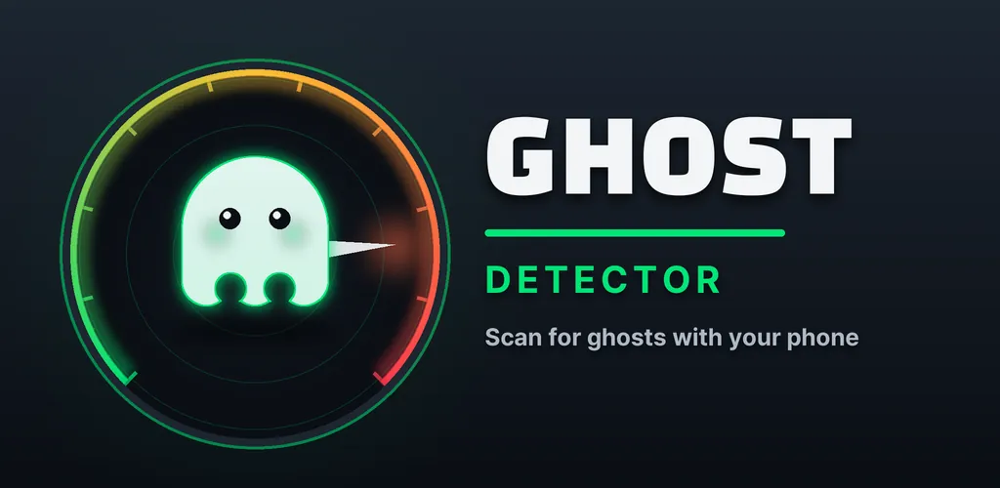
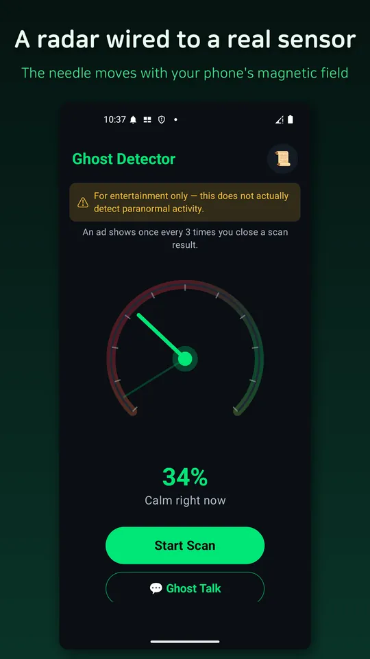
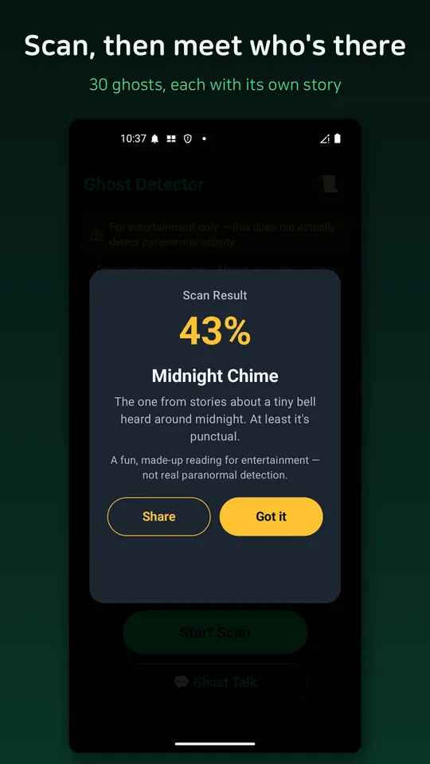
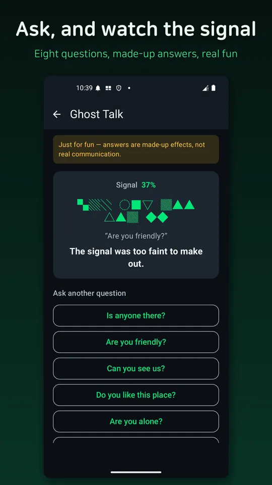
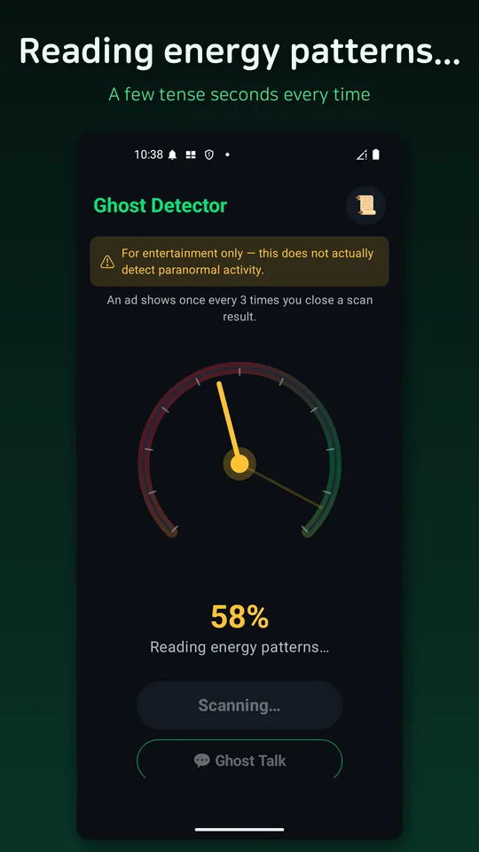
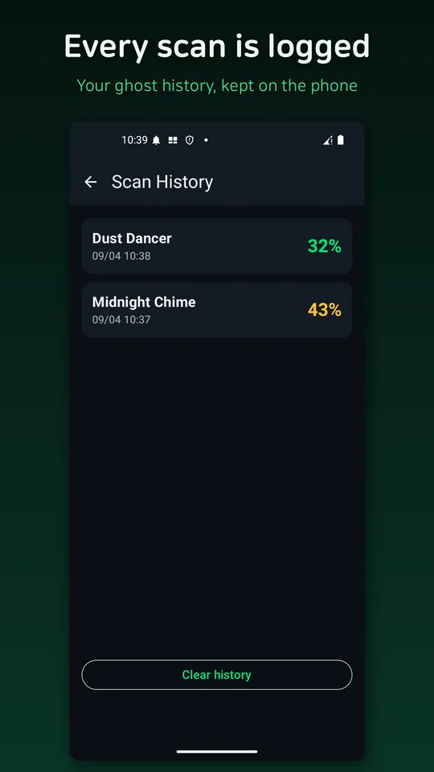

Ghost Detector: EMF Radar
Ghost detector: EMF radar reacting to your phone sensor. Just for fun, not real






About this app
Your phone, turned into a ghost detector! 📡
Ghost Detector is a novelty prop app: a circular radar gauge that reacts in real time to your phone's actual magnetic field sensor (magnetometer), scanning the "energy" around you. Walk near metal or electronics and you'll feel the needle come alive.
- What's inside
· A circular radar gauge that reacts live to your magnetic sensor (it drifts gently even at rest)
· Tap "Start Scan" for a 3-5 second scan animation with sound and vibration — plus a few rare spooky surprises
· When the scan ends, see a detection intensity % and reveal a ghost card (30 types total)
· From faint presences like the Wandering Spirit and Quiet Watcher to intense ones like the Energetic Poltergeist and Ruler of the Night
· "Ghost Talk" — pick a question and a crackling signal answers back (a playful effect)
· A "Today's Ghost" on the home screen that changes every day
· Turn your reading into an image card and share it with friends
· Every past scan is saved to a history screen you can revisit anytime
· No sign-up, no account — usable the moment you install it
Perfect for summer-night scares, campground dares, sleepovers, and Halloween parties — all from one phone.
- How it reacts
The radar gauge normalizes and reflects your phone's real magnetic field sensor (Sensor.TYPE_MAGNETIC_FIELD) values, so you'll genuinely see it react more near metal, electronics, or chargers. That said, the final detection % and which ghost card you pull are an entertainment result that blends the sensor reading with randomized flavor.
⚠ This app is 100% entertainment — a novelty prop, nothing more. It does not scientifically detect or verify ghosts or paranormal activity in any real sense; every result is an auto-generated bit of fun. No camera, microphone, location, or account required, and it works fully offline (aside from ad serving). Scan your room with friends and have a laugh.
Android · free with ads · Developer: RealTunaLove · Store listing in 17 languages